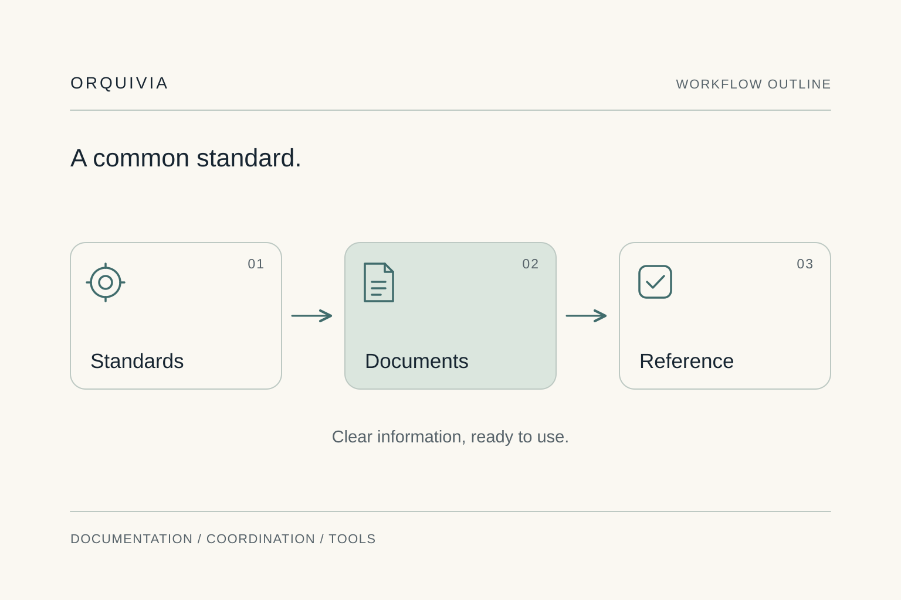

Listen before proposing
I start with a real task, the data it uses and the decisions it affects. Context matters as much as the tool.
ORQUIVIA · NICOLE PEREYRA
Tailored processes, coordination and management tools for architecture practices and project managers.
The person behind Orquivia
I’m Nicole Pereyra, founder of Orquivia. I work with architecture practices and project managers to organise documents, coordinate specific assignments and develop management tools designed around their team.
My experience combines architecture and retail documentation, project coordination and project management applications. Each engagement starts by understanding how the team works.
Let’s discuss your projectFounder
Experience in other settings
I have also worked with a florist, a carpenter and after-sales teams. Different needs share one thing: the tool has to fit the business’s working rhythm. Those experiences are part of my background in custom management applications.
How I work
I lead the analysis and implementation of each engagement. The proposal defines what will be addressed, what you will receive and how the result will be checked.
I start with a real task, the data it uses and the decisions it affects. Context matters as much as the tool.
A repeated review may be a symptom. We examine which standard is missing and what that means for those preparing, approving or receiving documents.
I design improvements around each business’s useful tools and processes. Changes are checked before they are extended.
Standards and processes your team can consult, apply and maintain after the engagement.

Value Retail · Technical documentation
Existing projects, drawn to different conventions. One clear need: drawings that could be read and shared with clients using a single standard.
We analysed the documentation, identified common elements and turned them into a shared graphic foundation.
Explore the Value Retail caseWe start by listening
In 15 minutes, we identify one task and the outcome you want. No presentation or full company walkthrough needed.
Let’s explore your project